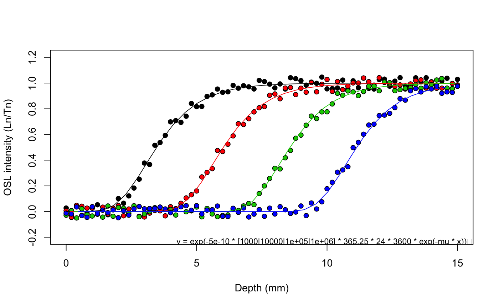

Example OSL surface exposure dating data
A set of synthetic OSL surface exposure dating data to demonstrate the fit_SurfaceExposure functionality. See examples to reproduce the data interactively.
Format
A list with 4 elements:
| Element | Content |
$sample_1 |
A data.frame with 3 columns (depth, intensity, error) |
$sample_2 |
A data.frame with 3 columns (depth, intensity, error) |
$set_1 |
A list of 4 data.frames, each representing a sample with different ages |
$set_2 |
A list of 5 data.frames, each representing a sample with different ages |
Source
See examples for the code used to create the data sets.
Details
$sample_1
| mu | sigmaphi | age |
| 0.9 | 5e-10 | 10000 |
$sample_2
| mu | sigmaphi | age | Dose rate | D0 |
| 0.9 | 5e-10 | 10000 | 2.5 | 40 |
$set_1
| mu | sigmaphi | ages |
| 0.9 | 5e-10 | 1e3, 1e4, 1e5, 1e6 |
$set_2
| mu | sigmaphi | ages | Dose rate | D0 |
| 0.9 | 5e-10 | 1e2, 1e3, 1e4, 1e5, 1e6 | 1.0 | 40 |
References
Unpublished synthetic data
Examples
## ExampleData.SurfaceExposure$sample_1 sigmaphi <- 5e-10 age <- 10000 mu <- 0.9 x <- seq(0, 10, 0.1) fun <- exp(-sigmaphi * age * 365.25*24*3600 * exp(-mu * x)) set.seed(666) synth_1 <- data.frame(depth = x, intensity = jitter(fun, 1, 0.1), error = runif(length(x), 0.01, 0.2)) ## VALIDATE sample_1 fit_SurfaceExposure(synth_1, mu = mu, sigmaphi = sigmaphi)#> #> [fit_SurfaceExposure()] #> #> Estimated paramater(s): #> ----------------------- #> age (a): 9890 ± 369 #> #> Fixed parameters(s): #> -------------------- #> sigmaphi: 5e-10 #> mu: 0.9 #>#> #> [RLum.Results-class] #> originator: fit_SurfaceExposure() #> data: 5 #> .. $summary : data.frame #> .. $data : data.frame #> .. $fit : nls #> .. $args : list #> .. $call : call #> additional info elements: 0## ExampleData.SurfaceExposure$sample_2 sigmaphi <- 5e-10 age <- 10000 mu <- 0.9 x <- seq(0, 10, 0.1) Ddot <- 2.5 / 1000 / 365.25 / 24 / 60 / 60 # 2.5 Gy/ka in Seconds D0 <- 40 fun <- (sigmaphi * exp(-mu * x) * exp(-(age * 365.25*24*3600) * (sigmaphi * exp(-mu * x) + Ddot/D0)) + Ddot/D0) / (sigmaphi * exp(-mu * x) + Ddot/D0) set.seed(666) synth_2 <- data.frame(depth = x, intensity = jitter(fun, 1, 0.1), error = runif(length(x), 0.01, 0.2)) ## VALIDATE sample_2 fit_SurfaceExposure(synth_2, mu = mu, sigmaphi = sigmaphi, Ddot = 2.5, D0 = D0)#> #> [fit_SurfaceExposure()] #> #> Estimated paramater(s): #> ----------------------- #> age (a): 9800 ± 675 #> #> Fixed parameters(s): #> -------------------- #> sigmaphi: 5e-10 #> mu: 0.9 #>#> #> [RLum.Results-class] #> originator: fit_SurfaceExposure() #> data: 5 #> .. $summary : data.frame #> .. $data : data.frame #> .. $fit : nls #> .. $args : list #> .. $call : call #> additional info elements: 0## ExampleData.SurfaceExposure$set_1 sigmaphi <- 5e-10 mu <- 0.9 x <- seq(0, 15, 0.2) age <- c(1e3, 1e4, 1e5, 1e6) set.seed(666) synth_3 <- vector("list", length = length(age)) for (i in 1:length(age)) { fun <- exp(-sigmaphi * age[i] * 365.25*24*3600 * exp(-mu * x)) synth_3[[i]] <- data.frame(depth = x, intensity = jitter(fun, 1, 0.05)) } ## VALIDATE set_1 fit_SurfaceExposure(synth_3, age = age, sigmaphi = sigmaphi)#> #> [fit_SurfaceExposure()] #> #> Shared estimated paramater(s): #> ----------------------- #> mu: 0.901 ± 0.00161 #> #> Fixed parameters(s): #> -------------------- #> age (a): 1000, 10000, 1e+05, 1e+06 #> sigmaphi: 5e-10 #>#> #> #> #>#> #> [RLum.Results-class] #> originator: fit_SurfaceExposure() #> data: 5 #> .. $summary : data.frame #> .. $data : data.frame #> .. $fit : nls #> .. $args : list #> .. $call : call #> additional info elements: 0## ExampleData.SurfaceExposure$set_2 sigmaphi <- 5e-10 mu <- 0.9 x <- seq(0, 15, 0.2) age <- c(1e2, 1e3, 1e4, 1e5, 1e6) Ddot <- 1.0 / 1000 / 365.25 / 24 / 60 / 60 # 2.0 Gy/ka in Seconds D0 <- 40 set.seed(666) synth_4 <- vector("list", length = length(age)) for (i in 1:length(age)) { fun <- (sigmaphi * exp(-mu * x) * exp(-(age[i] * 365.25*24*3600) * (sigmaphi * exp(-mu * x) + Ddot/D0)) + Ddot/D0) / (sigmaphi * exp(-mu * x) + Ddot/D0) synth_4[[i]] <- data.frame(depth = x, intensity = jitter(fun, 1, 0.05)) } ## VALIDATE set_2 fit_SurfaceExposure(synth_4, age = age, sigmaphi = sigmaphi, D0 = D0, Ddot = 1.0)#> #> [fit_SurfaceExposure()] #> #> Shared estimated paramater(s): #> ----------------------- #> mu: 0.899 ± 0.00232 #> #> Fixed parameters(s): #> -------------------- #> age (a): 100, 1000, 10000, 1e+05, 1e+06 #> sigmaphi: 5e-10 #>#> #> #> #>#> #> [RLum.Results-class] #> originator: fit_SurfaceExposure() #> data: 5 #> .. $summary : data.frame #> .. $data : data.frame #> .. $fit : nls #> .. $args : list #> .. $call : call #> additional info elements: 0# NOT RUN { ExampleData.SurfaceExposure <- list( sample_1 = synth_1, sample_2 = synth_2, set_1 = synth_3, set_2 = synth_4 ) # }